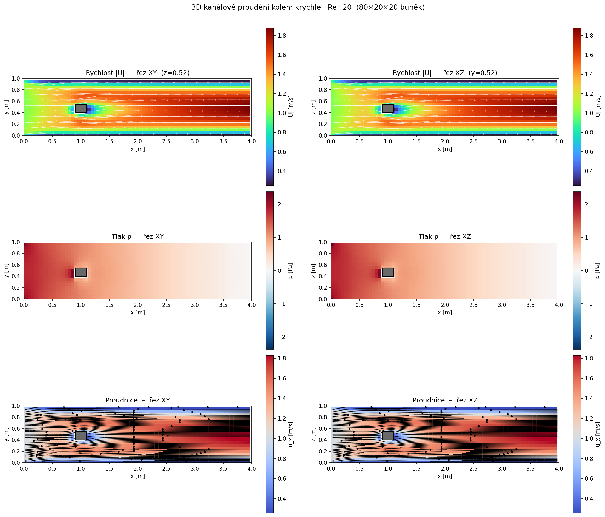
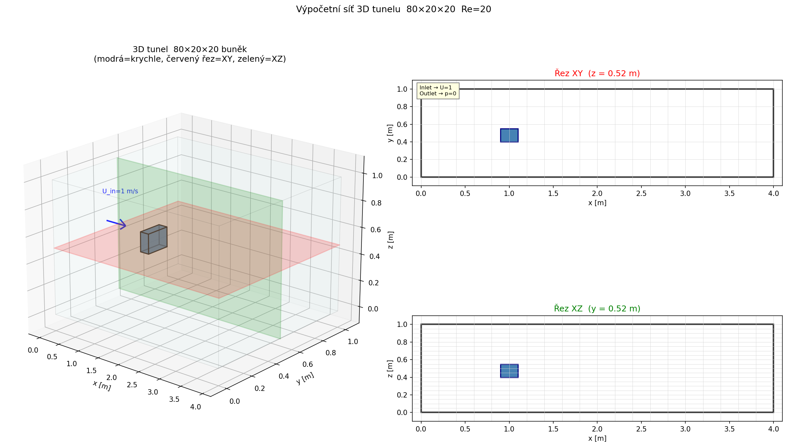
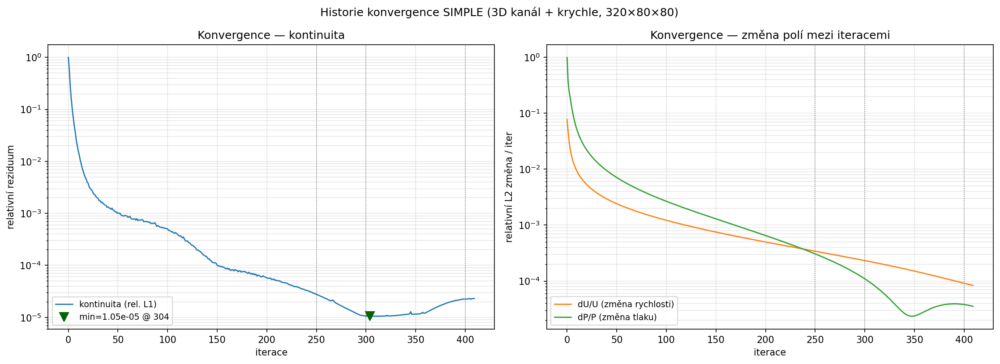
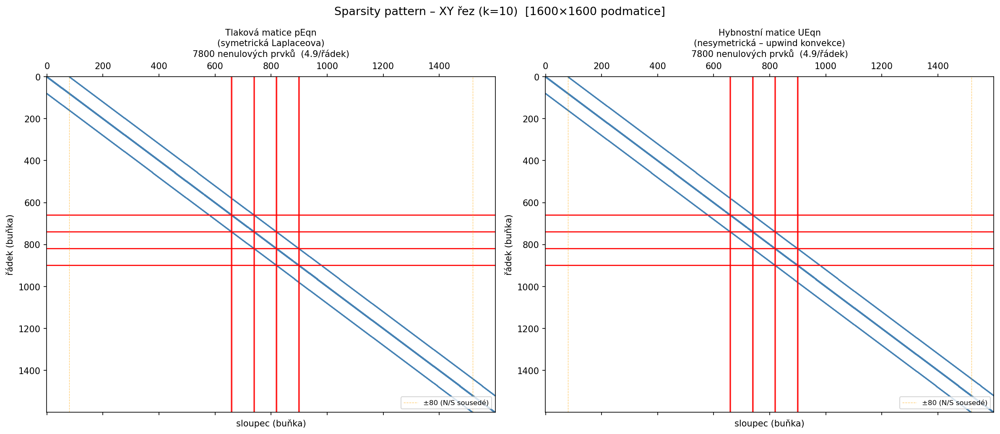
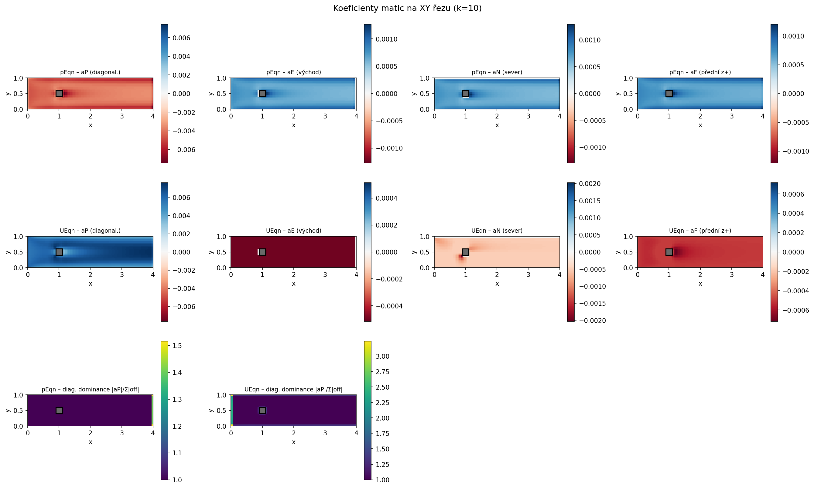
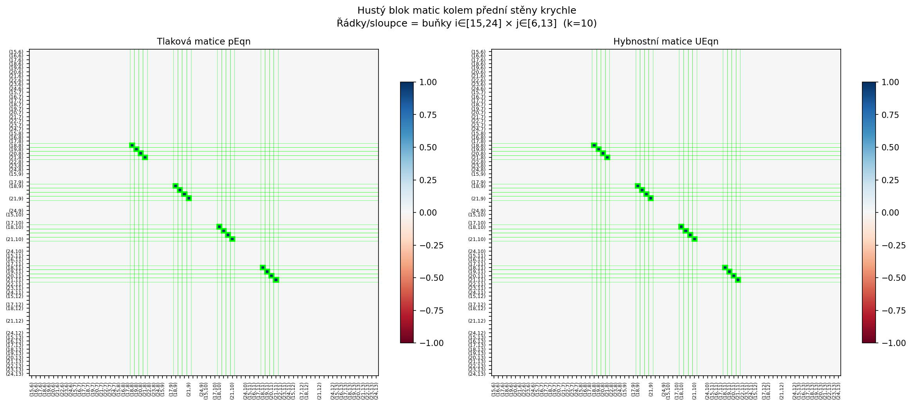

Obsah stránky
Vizualizace výsledků¶
Výstupy řešiče (Re = 20). Obrázky generují Python skripty (plot_fields.py, plot_mesh.py, plot_convergence.py, plot_matrix.py) z dat řešiče.
Proudění — rychlost, tlak a proudnice (řezy XY a XZ)¶

Výpočetní síť a poloha krychle v tunelu¶

Historie konvergence (kontinuita + změna polí)¶

Struktura řídkých matic (sparsity pattern)¶

Prostorové rozložení koeficientů matic¶

Hustý blok matice kolem krychle (7bodový stencil)¶
